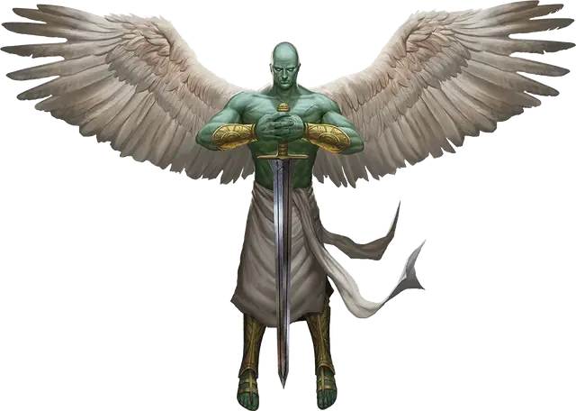

Планетар
Planetar
Большой Небожитель, законно-добрый

Класс Доспеха 19 (природный доспех)
Хиты 200 (16к10 + 112)
Скорость 40 футов, летая 120 футов
| мод | спас | ||
|---|---|---|---|
| СИЛ | 24 | +7 | +7 |
| ЛОВ | 20 | +5 | +5 |
| ТЕЛ | 24 | +7 | +12 |
| мод | спас | ||
|---|---|---|---|
| ИНТ | 19 | +4 | +4 |
| МДР | 22 | +6 | +11 |
| ХАР | 25 | +7 | +12 |
Навыки Восприятие +11
Сопротивление урону излучение; дробящий, колющий, рубящий от немагических атак
Иммунитет к состояниям истощение, очарование, испуг
Чувства истинное зрение 120 футов, пассивное Восприятие 21
Языки Все, Телепатия 120 фт.
Опасность 16 (15000 опыта)
Бонус мастерства +5
Особенности
Оружие ангела. Атаки оружием планетара являются магическими. Если планетар попадает любым оружием, оно причиняет дополнительные 5к8 урона излучением (уже включено в атаку).
Божественная осведомленность. Планетар знает, когда слышит ложь.
Врождённое колдовство. Базовой характеристикой планетара является Харизма (Сл спасброска от заклинания 20). Планетар может накладывать следующие заклинания, не нуждаясь в материальных компонентах:
• Неограниченно: обнаружение зла и добра [detect evil and good], невидимость [invisibility] (только на себя);
• 3/день каждое: небесный огонь [flame strike], оживление [raise dead], рассеивание зла и добра [dispel evil and good], стена клинков [blade barrier];
• 1/день каждое: власть над погодой [control weather], нашествие насекомых [insect plague], общение [commune].
Сопротивление магии. Планетар совершает с преимуществом спасброски от заклинаний и прочих магических эффектов.
Действия
Мультиатака. Планетар совершает две рукопашные атаки.
Двуручный меч. Рукопашная атака оружием: +12 к попаданию, досягаемость 5 футов, одна цель. Попадание: 21 (4к6 + 7) рубящего урона плюс 22 (5к8) урона излучением.
Целебное касание (4/день). Планетар прикасается к другому существу. Цель магическим образом восстанавливает 30 (6к8 + 3) хитов и избавляется от проклятий, болезней, отравлений, слепоты и глухоты.
Описание
Планетары это оружие богов, которым они служат, воплощение мощи своих божеств. Они могут вызвать дождь, чтобы облегчить засуху, или наслать насекомых, чтобы уничтожить урожай. Уши этих небожителей слышат любую ложь, а их сияющие глаза видят любой обман.
Планетары мускулистые и лысые. Кожа их зеленого цвета с молочным отливом, а крылья у них белые. Они возвышаются над большинством гуманоидов, и изящно пользуются огромными мечами. Иногда их отправляют на помощь могущественным смертным, занятым добрыми делами, но особенно планетары любят миссии, в которых можно сразиться с исчадьями.
См. дополнительно статью: «Бестиарий: Ангелы»